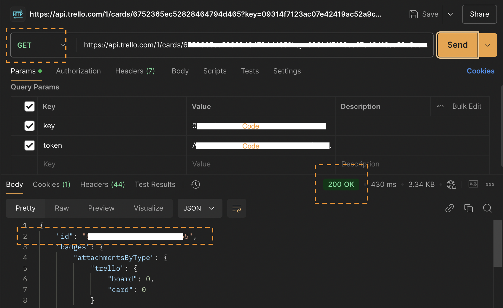
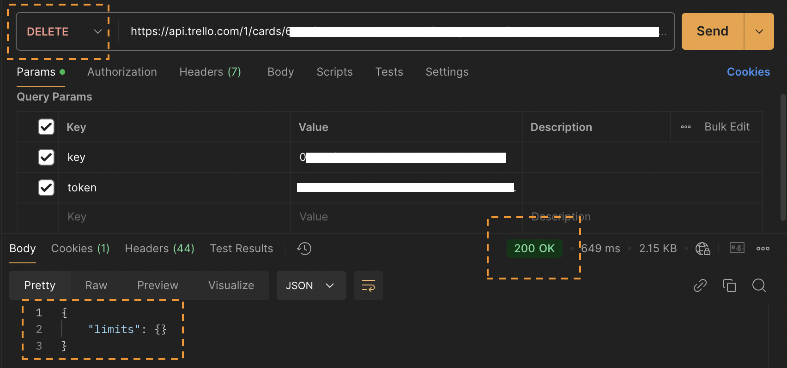

Trello API: Deleting a Card
This guide explains how to delete a card from your Trello board using the Trello API. Follow the steps below to retrieve a card ID and send a request to remove it.
Step 1: Retrieve the Card ID
To delete a card, you must first obtain its ID. Use the following GET request to fetch the card details:
GET https://api.trello.com/1/cards/{cardID}?key=YOUR_API_KEY&token=YOUR_ACCESS_TOKEN

Step 2: Delete the Card
Once you have the Card ID, use the following DELETE request to remove it:
DELETE https://api.trello.com/1/cards/{cardID}?key=YOUR_API_KEY&token=YOUR_ACCESS_TOKEN
Replace {cardID} with the actual ID of the card you want to delete.
- Set the HTTP method to
DELETE. - Enter the API endpoint, replacing
{cardID}with the correct ID. - Click Send to execute the request.

Expected Outcome
The specified card will be permanently deleted from your Trello board. If successful, the API will return a 200 OK response, confirming the deletion.
Common Errors & Troubleshooting
| Error Code | Possible Cause | Solution |
|---|---|---|
| 401 Unauthorized | Invalid API Key or Token | Ensure your API Key and Token are correct. |
| 400 Bad Request | Missing required parameters | Confirm that the cardID parameter is included. |
| 404 Not Found | Card ID is invalid or does not exist | Verify the cardID and ensure the card is in an accessible board. |